Fudoshin
Somos una academia de karate estilo Shotokan que forma a sus estudiantes con bases tradicionales
del
karate, además de preparar a los atletas en las disciplinas de kata y kumite para competir en torneos
nacionales e internacionales.
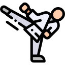
Karate
El karate nació en Japón y se expandió por todo el mundo, siendo una de las
artes
marciales más practicadas y transmitidas de generación en generación. Nosotros enseñamos karate
y
formamos karatecas que cumplen con los requerimientos originales.
Shotokan
Actualmente existen muchos estilos de karate; el nuestro es el Shotokan, estilo
que
se caracteriza por posiciones flexionadas y bajas. El karate Shotokan fue el primer estilo de
karate-do japonés.
Kata
Las bases del karate son las katas. Enseñamos todas y cada una de ellas, de
forma
que nuestros karatecas dominen cada técnica a la perfección. Las katas son aprobadas y
utilizadas
también en competencias.
Kumite
Enseñamos técnicas y estrategias de kumite deportivo, de forma que nuestros
estudiantes están capacitados para pelear en competencias. En nuestro dojo, formamos atletas de
élite.
Niveles de Cinta
El camino de un karateca siempre es desafiante. En nuestra academia, ponemos a prueba los conocimientos
de cada estudiante con exámenes oficiales cada 6 meses. Si el estudiante logra pasar las pruebas, tendrá
un ascenso de cinta.
- 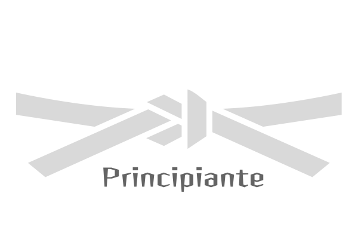
- 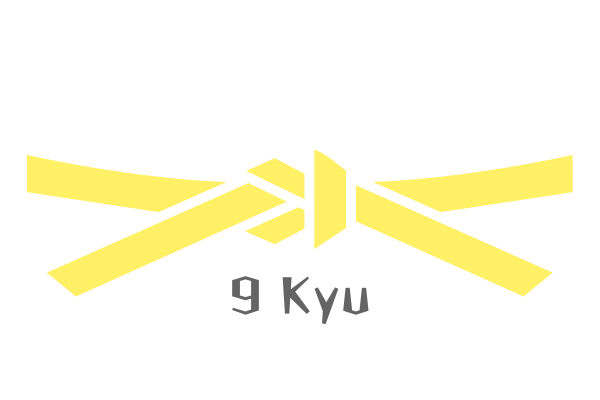
- 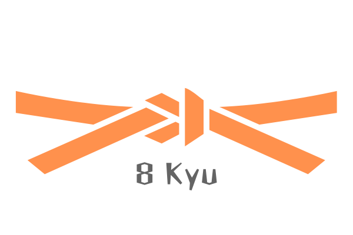
- 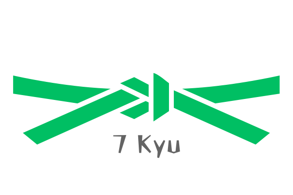
- 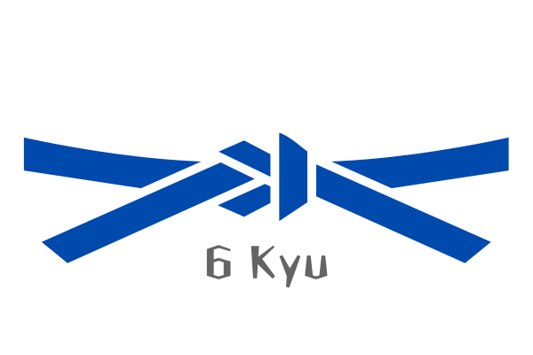
- 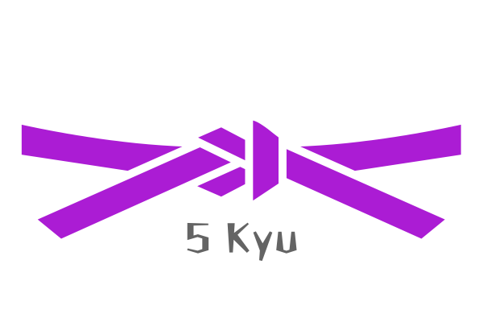
- 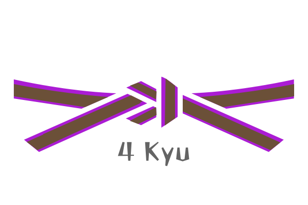
- 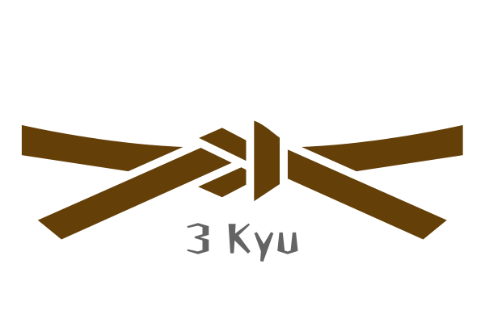

- 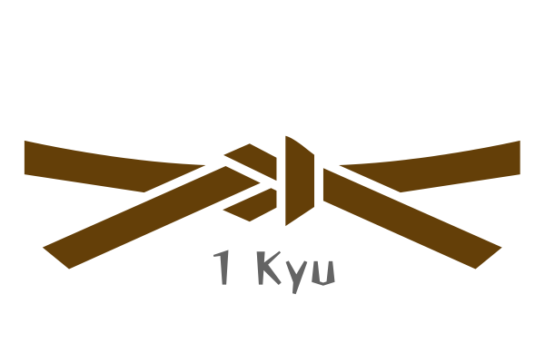
- 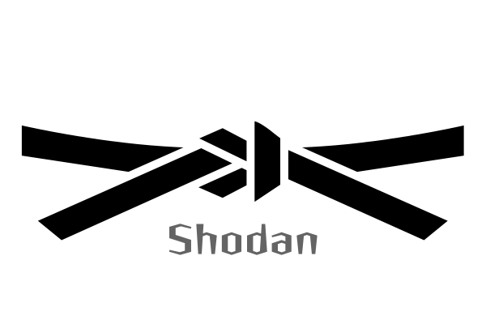